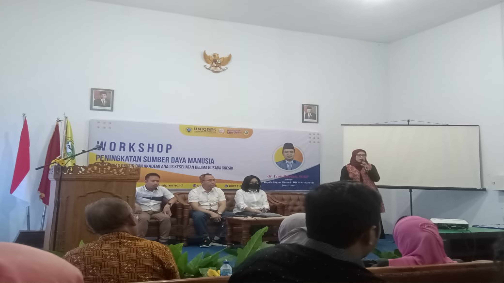
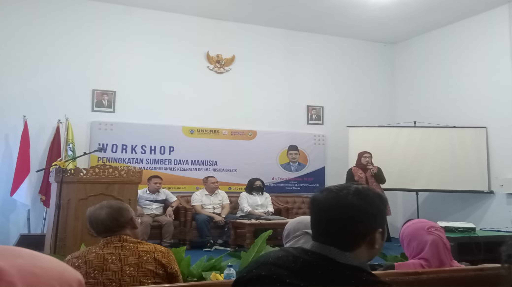

Audit Mutu Internal (AMI)
Sistem Penjaminan mutu Internal ( SPMI ) adalah kegiatan sistemik Penjaminan Mutu untuk mengawasi Penyelenggaraan Pendidikan Tinggi oleh Universitas Gresik (Internally driven ) secara berkelanjutan (continuous improvement ).
A. Pengertian Audit Mutu Internal (AMI)
Universitas Gresik dalam rangka untuk memenuhi kepuasan pelanggan (Costumers, Stakeholders ) dan menghasilkan lulusan yang kompeten sesuai dengan kualifikasi serta dalam rangka menjamin mutu secara berkelanjutan, maka dilakukan peningkatan kualitas secara terus menerus melalui suatu siklus Penetapan, Pelaksanaan, Evaluasi , Pengendalian dan Peningkatan (PPEPP ) Standar Pendidikan Tinggi.
Evaluasi adalah bagian dari siklus implementasi PPEPP, Evaluasi Pelaksanaan Standar Pendidikan Tinggi dilakukan untuk mengukur tingkat kesesuaian antara penyelenggaraan pendidikan Tinggi dengan Standar Pendidikan Tinggi. Oleh karena itu, evaluasi dilakukan terhadap pelaksanaan semua standar pendidikan tinggi melalui AMI (audit mutu internal ) sesuai dengan Permenristekdikti no 62 tahun 2016 pasal 5 tentang sistem penjaminan mutu perguruan tinggi.
Audit Mutu Internal (AMI ) adalah proses pengujian yang sistematik, mandiri, dan terdokumentasi untuk memastikan pelaksanaan kegiatan di Perguruan Tinggi sesuai prosedur dan hasilnya telah sesuai dengan standar untuk mencapai tujuan institusi. AMI merupakan audit yang dilakukan untuk menentukan tingkat kesesuaian pelaksanaan kegiatan terhadap standar mutu, peraturan, prosedur, instruksi kerja, dalam rangka peningkatan institusi dan mengurangi resiko ketidaktercapaian standar/ penurunan kualitas.
B. Tujuan AMI
Adapun dilaksanakannya Audit Mutu Internal ( AMI ) mempunyai tujuan membantu seluruh anggota unit pelaksana akademik dalam melaksanakan tugas untuk mencapai sasaran akademik yang ditetapkan secara efektif, efisien dan bertanggung jawab.
~ Tujuan Umum :
Secara Umum AMI juga bertujuan melaksanakan verifikasi kesesuaian antara pelaksanaan dengan Standar Pendidikan Tinggi yang telah ditetapkan dalam rangka peningkatan Mutu.
~ Tujuan Khusus :
1. Memeriksa kesesuaian atau ketidaksesuaian unsur–unsur sistem mutu dengan standar yang telah ditetapkan.
2. Memeriksa proses dan hasil proses pencapaian mutu sehingga dapat ditentukan kefektifan pencapaian dari tujuan yang telah ditetapkan.
3. Untuk menyiapkan laporan kepada teraudit (auditee) sebagai dasar perbaikan mutu selanjutnya.
4. Untuk memberi kesempatan teraudit memperbaiki sistem penjaminan mutu.
5. Memastikan bahwa tujuan dan sasaran dari unit / program yang telah ditetapkan.
6. Mengidentifikasi ruang perbaikan sehingga bisa dibuat saran untuk peningkatan kualitas dimasa mendatang.
C.Manfaat AMI
Manfaat yang diperoleh secara langsung diadakannya AMI adalah didapatkannya rekomendasi peningkatan mutu Perguruan Tinggi, Fakultas dan Program Studi serta unit-unit yang ada di lingkungan Universitas Gresik. Rekomendasi tersebut akan bermanfaat bagi Pimpinan perguruan tinggi dalam mengembangkan berbagai program untuk mencapai Visi dan tujuan Perguruan Tinggi, Fakultas ataupun Program studi.
Audit Mutu Internal ( AMI ) merupakan salah satu upaya untuk peningkatan mutu dan pengembangan institusi serta untuk mengetahui kesesuaian standar dengan pelaksanaan yang telah dilakukan pada berbagai aspek yang ditetapkan dalam lingkup AMI.
D. Ruang Lingkup AMI
Adapun ruang lingkup Audit Mutu Internal (AMI) dilingkungan Universitas Gresik adalah sesuai dengan Standar Pendidikan Tinggi yang telah ditetapkan yaitu pada bidang Pendidikan, Penelitian dan Pengabdian Masyarakat serta bidang lainnya yang diselaraskan dengan standar mutu Universitas Gresik yaitu standar pendidikan, standar penelitian, dan standar pengabdian masyarakat dan bidang non akademik.
E. Sasaran Audit Mutu Internal (AMI)
Berdasarkan manfaat yang dapat diberikan oleh pelaksanaan AMI yang baik dan profesional, maka sasaran utama dari AMI adalah;
1.Terbentuknya sistem tata kelola organisisi yang handal dan terpercaya (Good University Governance)
2.Tercapai dan terlampauinya setiap standar mutu yang telah ditetapkan baik standar mutu bidang akademik maupun non akademik secara kontinus
(continous improvement)
3.Terciptanya budaya mutu di setiap aktivitas civitas akademika Universitas Gresik
4.Terakselarasinya pemenuhan indikator-indikator akreditasi perguruan tinggi baik akreditasi nasional maupun internasional
5.Terbentuknya kerangka kerja yang tersetruktur untuk pencapaian VISI dan MISI institusi secara maksimal.
6.Terbangunnya penyusunan program kerja dan pembiayaan yang tepat sasaran
7.Terbentuknya program studi dan unit-unit yang handal dan berkemajuan
8.Tercapainya pengakuan perguruan tinggi di tingkat regional maupun global
Monitoring & Evaluasi (MONEV)
Peran Sistem Penjaminan Mutu Internal (SPMI) adalah kegiatan sistemik penjaminan mutu pendidikan tinggi di perguruan tinggi oleh perguruan tinggi, untuk mengawasi penyelenggaraan pendidikan tinggi oleh perguruan tinggi secara berkelanjutan. SPMI bersifat mandiri (internal driven), tanpa campur tangan pemerintah serta dilakukan berkelanjutan. Sedangkan Mutu perguruan tinggi adalah kesesuaian antara penyelenggaraan perguruan tinggi dengan Standar Nasional Pendidikan (SNP), maupun standar yang ditetapkan oleh perguruan tinggi berdasarkan visi dan kebutuhan dari para pihak yang berkepentingan (stakeholders). Sebagai kelengkapan dalam pelaksanaan monev di lingkungan Universitas Gresik ini, maka disusunlah pedoman pelaksanaan monev yang merupakan acuan bagi pelaksanaan kegiatan monev di setiap unit kerja.
Dasar Hukum
Adapun dasar hukum pelaksanaan monitoring dan evaluasi dalam penyelenggaraan Tri Dharma Perguruan Tinggi sebagai berikut :
1. Undang-Undang Republik Indonesia Nomor 20 tahun 2003 tentang Sistem Pendidikan Nasional;
2. Undang-Undang Republik Indonesia Nomor 12 tahun 2012 tentang Pendidikan Tinggi;
3. Peraturan Menteri Riset Teknologi dan Pendidikan Tinggi Nomor 44 tahun 2015 tentang Standar Nasional Pendidikan Tinggi;
4. Statuta Universitas Gresik
5. Renstra Universitas Gresik tahun 2016-2020
6. Peraturan Rektor no 074 / 2019 tentang Standar SPMI Universitas Gresik
Tujuan
Adapun tujuan dari pelaksanaan monev ini antara lain :
1.Memonitoring kesesuaian dan ketercapaian target dari masing- masing kegiatan program kerja.
2.Mengevaluasi temuan hasil monev dalam upaya pengendalian dan peningkatan kualitas.
3.Menindaklanjuti temuan dalam mengendalikan dan meningkatkan kualitas proses pembelajaran.
Ruang Lingkup
1. Sistem penjaminan Mutu Internal terdiri dari Kebijakan, Standar, Manual dan Folmulir SPMI. (terlampir)
2. Bidang Akademik
a. Monev Pendidikan; terdiri dari
1)Monev Kurikulum; adalah monitoring dan evaluasi yang dilaksankan setahun sekali. Dan
2)Monev Pembelajaran; adalah monitoring dan evaluasi yang dilaksanakan di pertengahan semester dan
3)Akhir semester untuk masing-masing semester ganjil dan semester genap adalah monev Perkuliahan. Serta monitoring dan evaluasi Kinerja Dosen, dilaksanakan setiap semester.
4)Monev Tugas Akhir Mahasiswa dilaksankan Persemester tediri dari monitoring dan evaluasi prososal serta Skripsi sekali
b. Monev Penelitian; adalah monitoring dan evaluasi yang dilaksanakan setiap tahunnya
c. Monev Pengabdian Masyarakat; adalah monitoring dan evaluasi yang dilaksankan disetiap tahunnya
3. Bidang Non Akademik
a). Monev Visi Misi; adalah monitoring dan evaluasi visi keilmuan Program studi yang dilaksanakan setahun sekali
b). Monev Tata Pamong; adalah monitoring dan evaluasi tata pamong program sarjana dan program pascasarjana atau dapat dikatakan monitoring dan evaluasi di
tingkat fakultas, yang dilaksanakan setahun sekali
c). Monev Sasaran Mutu; adalah monitoring dan evaluasi di tingkat fakultas atau pun program studi baik program sarjana maupun program pascasarjana yang
dilaksanakan setahun sekali.
d). Monev Rencana Strategi; yaitu monitoring dan evaluasi yang dilaksanakan setahun sekali.
e). Monev Kerjasama; Terdiri dari Monitoring dan evaluasi kepuasan Mitra Kerjasama serta monitoring dan evaluasi mitra Kerjasama yang dilaksanakan
setiap satu tahun sekali.
f). Monev Kemahasiswaan; Terdiri dari Monitoring dan evaluasi kepuasan mahasiswa terhadap layanan akademik, Tracer Study dan Stakeholder yang
dilaksanakan setiap satu tahun sekali. Serta Monev Pencarian Mahasiswa Baru (PMB) yang dilaksanakan setiap tahun sekali.
g). Monev kepegawaian; Terdiri dari Kepuasan dosen dan tenaga kependidikan terhadap layanan akademik yang dilaksanakan setahun sekali
h). Monev keuangan; adalah monitoring dan evaluasi kesesuaian ketercapaian standar keuangan yang dilaksanakan setahun sekali
i). Monev Sarana dan Prasarana; adalah monitoring dan evaluasi sarana dan prasarana yang dilaksanakan setahun sekali
j). Monev Puskom; adalah monitoring dan evaluasi yang yang dilaksanakan setahun sekali
k). Monev perpustakaan; adalah monitoring dan evaluasi yang yang dilaksanakan setahun sekali
Sasaran
Sasaran monev adalah seluruh unit kerja dilingkungan Universitas Gresik yang terdiri dari fakultas, program pascasarjana, lembaga, LPPM, BPM, BAAK, Humas, IT, kepegawaian , keuangan, sarana prasarana dan perpustakaan